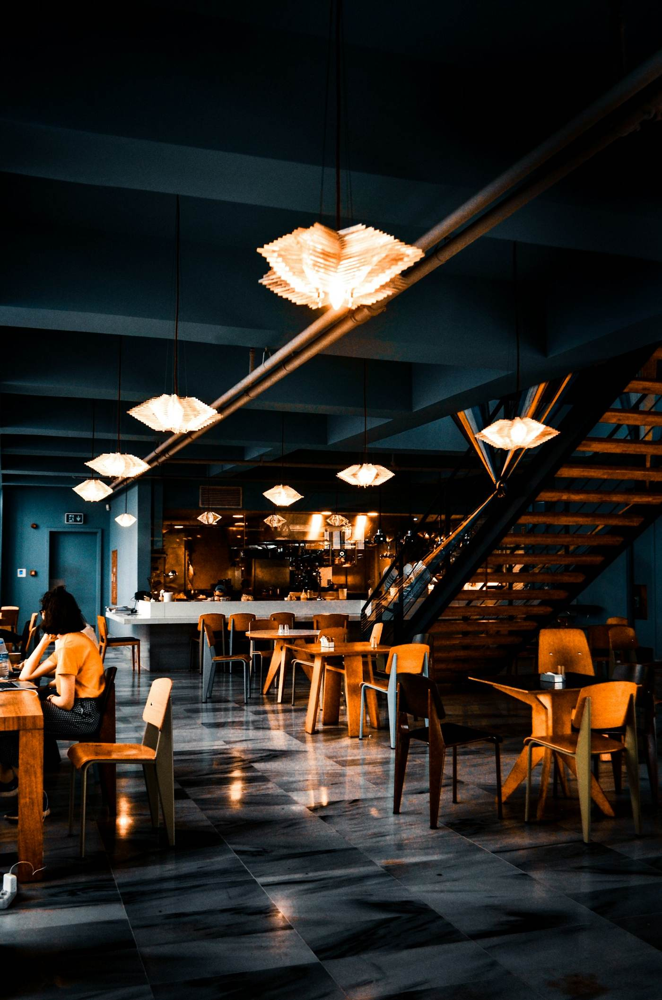

Sobre nós
Um balcão, um chef e muito rigor.

01A nossa história
Melhorar todos os dias.
O Kaizen nasceu da vontade de trazer para o Porto um sushi bar pequeno e honesto.
Trabalhamos com poucos fornecedores, todos de confiança, e mudamos o menu conforme a época.
Ao balcão, cada peça é servida no momento, para chegar à boca como deve ser.

01
Rigor
Cada detalhe conta, do corte ao arroz.
02
Respeito
Pelo produto, pela época e pelo cliente.
03
Simplicidade
Menos peças, mais sabor.